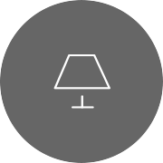
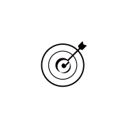
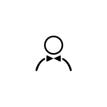
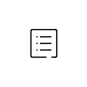

<!--
  Generated template for the AddPage page.

  See http://ionicframework.com/docs/components/#navigation for more info on
  Ionic pages and navigation.
-->


<ion-content padding>
  <ul id="plus">
    <li><h4>我搭</h4>家具搭配DIY</li>
    <li><h4>专题</h4>分享更多乐趣</li>
    <li><h4>设计师</h4>乌托家的创造者</li>
    <li><h4>资讯</h4>专业导购指南</li>
  </ul>
</ion-content>
<ion-footer no-border text-center>
    <ion-icon (click)="close()" style="padding-bottom: 20px;font-size: 30px" color="light" name="md-close"></ion-icon>
</ion-footer>
